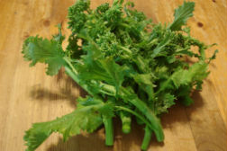
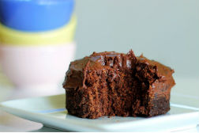
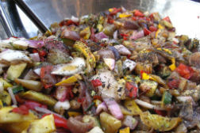

With our carefully curated vendor list, you'll know what to buy.
photo by Clare Barboza
Cauliflower Soup
I, too, couldn’t believe it when I didn’t see potato, soy milk, or some other kind of “creamy”
ingredient in
this soup. It calls for six…
Dec 5, 2011 / Read »

Mark Bittman’s Baked Broccoli Rabe
I could tell you how easy it is to make this simple and lovely side dish. But I think it’d be better if
you clicked through to Mark Bittman’s video....
Dec 5, 2011 / Read »

One Minute Chocolate Cake
Wednesday’s the day to make this little cake for yourself. Katie, of the popular blog Chocolate Covered
Katie recently shared this microwave recipe-for-one...
Dec 5, 2011 / Read »

How To Roast Vegetables
On a pizza. In pasta. As a side with mashed potatoes or a mac and cheese. Yes there are so many
wonderful uses of roasted vegetables. I love that they are so quick...
Dec 5, 2011 / Read »